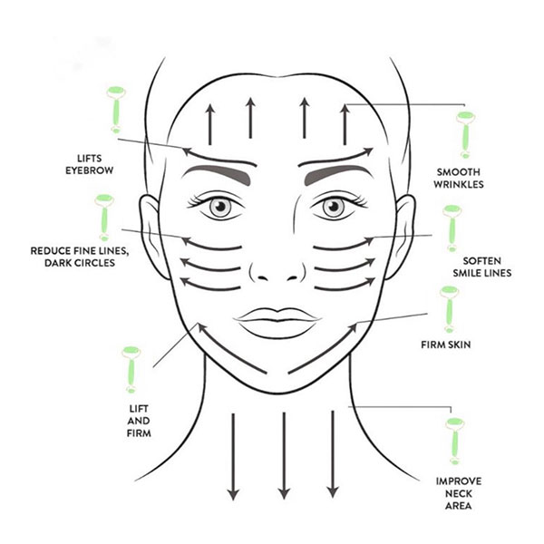
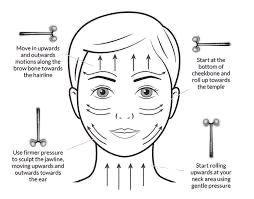

MASSAGES
GUASHA MASSAGE
- Makes skin smooth and even
- Improves facial contours and complexion
- Reduces puffiness
- Eliminates wrinkles
- Use the long side of the scraper too massage along the line from the nose to the ear
- Use the edge of the scraper to massage along the line starting from the corner of your eye
- Use the short side of the scraper to massage the nose bridge upward
- Use the long side of the scraper to massage the entire forehead upward
- Apply these steps to both side of the face

ROLLER MASSAGE
- Helps to reduce facial puffiness
- Improves complexion
- Improves skin tone
- Use a large roller to massage the entire forehead upward
- Roll along the nose bridge to the hairline with a small roller
- Use a small roller to roll along the line just below your eyebrow
- Use a weak roller to roll along the line starting from the corner of your eye
- Open your mouth as if you're going to say "O" and use a small roller to roll up and down along the nasobladial fold
- Use a large roller to roll along the jawline upward
- Use a large roller to roll along the line starting from the corner of your lips upwards
- Repeat the steps for the other side of the face too
- After your massage session . Use your fingertips to gently tap over your forehead,cheeks,chin,and area around the eyes

SCULPTING MASSAGE
- Tone, lift, and define facial muscles.
- Enhance facial contours
- Reduce puffiness, and improve circulation
- Place the sculptor at the center of your chin,Glide it along the jawline, moving from the center of your chin toward your ear
- Use upward strokes, glide the sculptor outward toward the temple.
- Starting in the center of the forehead, glide the tool upwards toward the hairline moving toward the temples on both sides.
- Use the edge of the sculptor , glide near the inner corner of the eye and move outward toward the temple.
- Place the sculptor at the base of your neck and glide upward toward the jawline. Repeat on both sides of the neck
- For the back of the neck,glide from the base of the neck upward toward the base of the skull.
- After your massage session . Use your fingertips to gently tap over your forehead,cheeks,chin,and area around the eyes
